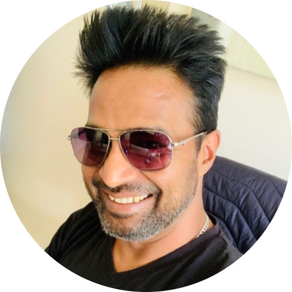

|  |
Sanjay Singhüìß ssingh21@gmail.comHighly experienced Agile Delivery Lead with over 15 years of experience in leading and managing cross-functional teams in delivering large-scale projects using Agile methodologies. Proven track record of delivering projects on-time, within budget and to a high standard of quality. Skilled in stakeholder management, risk management and problem-solving. Strong communicator and leader, able to inspire and motivate teams to achieve their goals |
|
|
Certified SaFe 5 AgilistCertified SaFe 5 Product Owner/Product ManagerCertified AWS Solution ArchitectCertified Google Cloud Platform Business Professional
|
10X Banking, London UK | Technology Operation Lead | June 2021 – Present |
Publicis Sapient, London UK | Senior Agile Program Manager | June 2011 - June 2021 |
Nucleus Software Exports Ltd | Noida India Project Manager | May 2007 – June 2011 |
Publicis Sapient, London UK | Senior Agile Program Manager | June 2011 - June 2021 |
Led a team of 8 cross-functional team members in delivering a large-scale project for a major financial institutionImplemented Agile methodologies and practices, resulting in a 60% increase in productivity and a 80% reduction in defectsCollaborated with stakeholders to define project scope, goals, and deliverablesSuccessfully managed project risks and issues and resolved conflicts within the team.Facilitated daily stand-up meetings, sprint planning, retrospective, and demos.Provided effective collaboration, facilitation, leadership, and coaching to support successful, on-time, high-quality delivery of software solutions.Identified risks, dependencies, and potential issues and proactively look for solutions to address them in advance.Supported the Product Owner, assist in maintaining product roadmap and delivery deadlines, breaking down high-level business intents into workable components, and written as user stories.Prioritized, sizing, and built Acceptance criteria and maintaining backlog items in Jira.Release and Deployment planning and execution on Client and Internal EnvironmentsDefect/Issue/Problem Management. Drive Continuous Root Cause Analysis Cycle with Feature Team and Service Delivery Managers.Delivery KPIs & OKRs Tracking and Reporting.Service Health Monitoring using New Relic and Prometheus |
| Agile Methodologies (SCRUM/Kanban/Lean) | ✳️ ✳️ ✳️ ✳️ ✳️ | Python | ✳️ ✳️ ✳️ ✳️ ✳️ |
| Stakeholder Management | ✳️ ✳️ ✳️ ✳️ ✳️ | Oracle DB | ✳️ ✳️ ✳️ ✳️ ✳️ |
| Risk Management | ✳️ ✳️ ✳️ ✳️ ✳️ | Salesforce Administrator | ✳️ ✳️ ✳️ ✳️ ✳️ |
| Jira/Confluence/Trello | ✳️ ✳️ ✳️ ✳️ ✳️ | Grafana/Newrelic | ✳️ ✳️ ✳️ ✳️ ✳️ |
| Cross Functional Team Leadership | ✳️ ✳️ ✳️ ✳️ ✳️ | Kubernetes/Terraform | ✳️ ✳️ ✳️ |
| Service Management | ✳️ ✳️ ✳️ ✳️ ✳️ | Git/Jenkins/Docker | ✳️ ✳️ ✳️ |
| L1/L2/L3 Support | ✳️ ✳️ ✳️ ✳️ ✳️ | AWS/Azure/Google Cloud | ✳️ ✳️ ✳️ ✳️ ✳️ |
| Change Management | ✳️ ✳️ ✳️ ✳️ ✳️ | SWIFT | ✳️ ✳️ ✳️ |